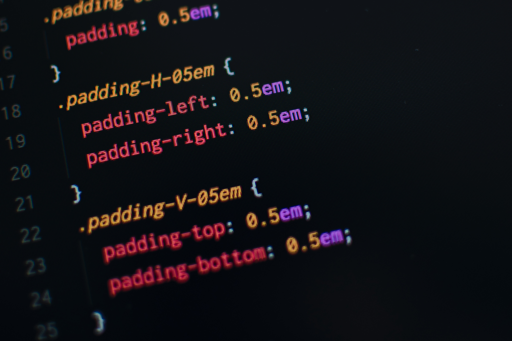

CSS helps Web developers create a uniform look across several pages of a Web site. Instead of defining the style of each table and each block of text within a page's HTML, commonly used styles need to be defined only once in a CSS document. Once the style is defined in cascading style sheet, it can be used by any page that references the CSS file. Plus, CSS makes it easy to change styles across several pages at once. For example, a Web developer may want to increase the default text size from 10pt to 12pt for fifty pages of a Web site. If the pages all reference the same style sheet, the text size only needs to be changed on the style sheet and all the pages will show the larger text.
While CSS is great for creating text styles, it is helpful for formatting other aspects of Web page layout as well. For example, CSS can be used to define the cell padding of table cells, the style, thickness, and color of a table's border, and the padding around images or other objects. CSS gives Web developers more exact control over how Web pages will look than HTML does. This is why most Web pages today incorporate cascading style sheets.